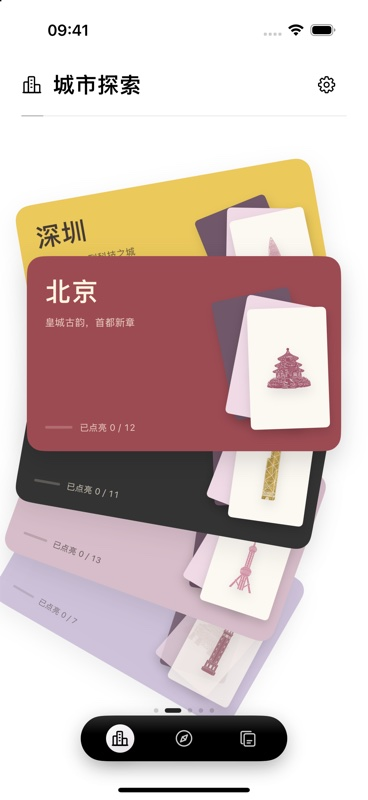
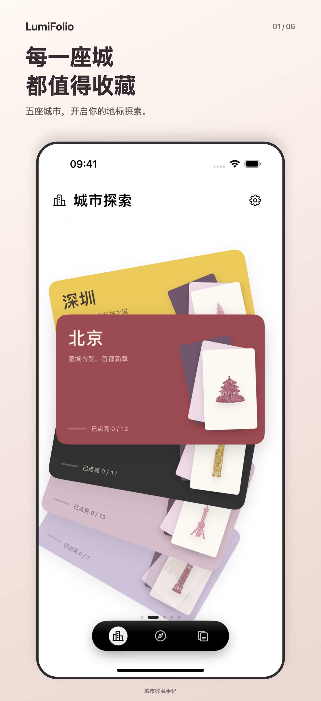
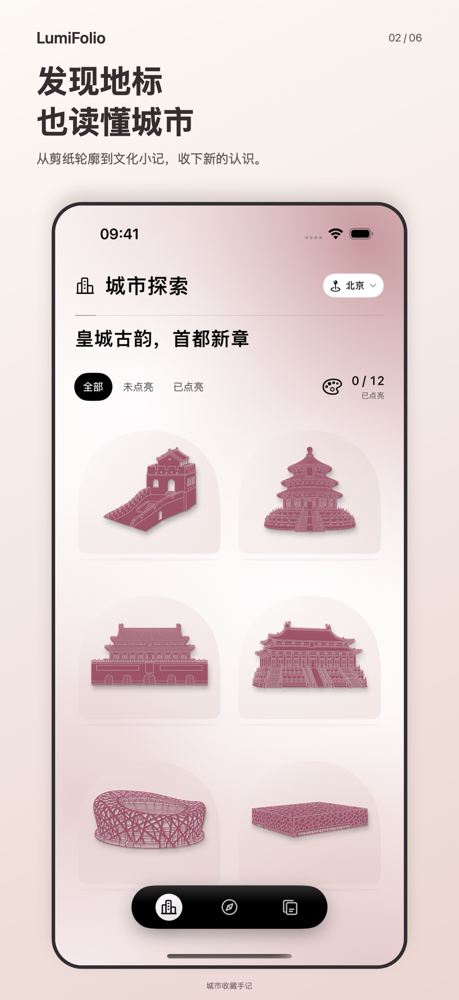
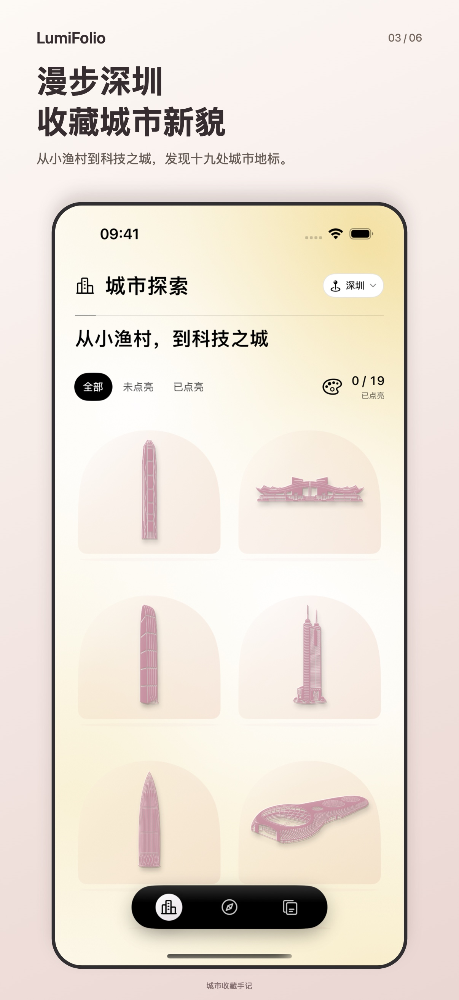
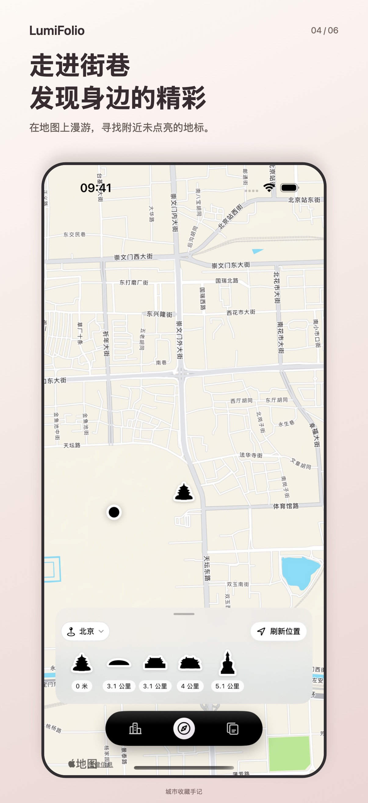
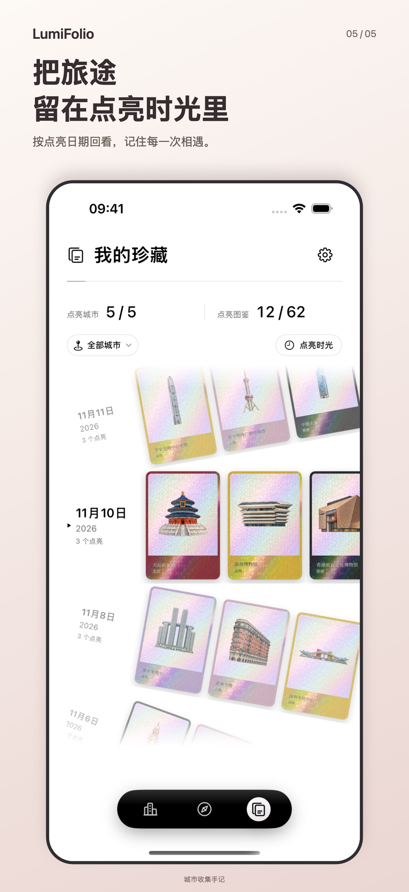
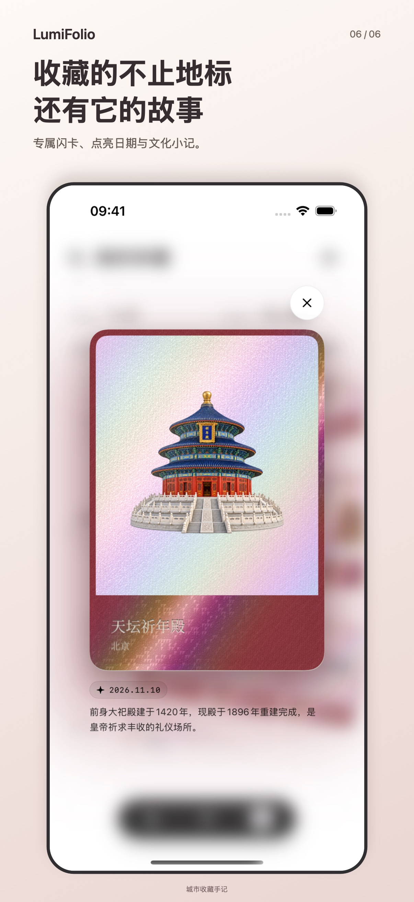

城市探索 · 地标图鉴 · 卡牌收藏
把城市相遇，收进珍藏。
一款中国地标建筑图鉴与拍照打卡 App。发现建筑、点亮卡牌，把旅途中的相遇留在自己的珍藏里。
当前支持：北京 · 上海 · 深圳 · 香港 · 重庆


让每一次出发，
都有值得收藏的发现。
从天坛祈年殿到现代城市天际线，LumiFolio 用中国剪纸的视觉语言，串起建筑、照片与城市记忆。无论你喜欢建筑、城市摄影，还是卡牌收藏，都可以按自己的节奏探索。
APP 一览
从发现，到珍藏。
看看 LumiFolio 里的城市与故事。点击图片，可查看完整截图。












下一次遇见，从这里开始。
- 01
选择一座城
浏览北京、上海、深圳、香港和重庆的地标图鉴，循着剪影与线索，发现想去的地方。
- 02
拍下你的发现
选择地标，拍照或从相册选图，在设备上识别；到访地标附近，也可以用定位点亮。
- 03
留下城市记忆
把点亮的地标收进珍藏，阅读文化小记，回看点亮日期，欣赏随拖动或倾斜变化的闪卡反光。